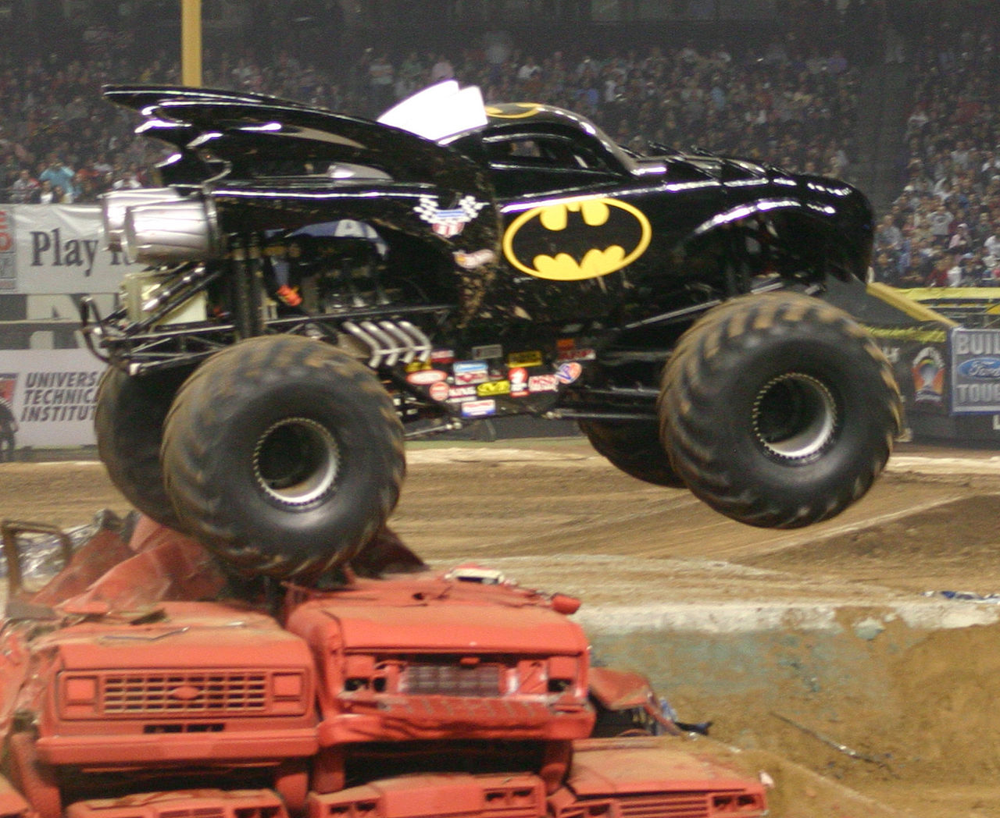

History
A monster truck is a vehicle that is typically styled after pickup truck bodies, modified or purposely built with extremely large wheels and suspension. They are used for competition and popular sports entertainment and in some cases they are featured alongside motocross races, mud bogging, tractor pulls and car-eating robots.
Modern

A monster truck show sometimes involves the truck crushing smaller vehicles beneath its huge tires. These trucks can run up and over most man-made barriers, so they are equipped with remote shut-off switches, called the Remote Ignition Interruptor (RII), to help prevent an accident if the driver loses control at any time. At some events, only one truck is on the course at a time, while most feature two drivers racing each other on symmetrical tracks, with the losing driver eliminated in single-elimination tournament fashion.
Content from WikiPedia © 2015